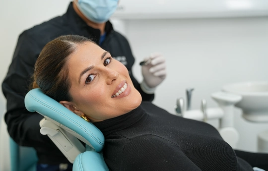

Fixing my smile
Apart from fixing crooked teeth, another way to fix your smile is to remove staining and discolouration through teeth whitening or veneers.

What stains your teeth?
There is a whole range of foods and drinks that can cause staining on your teeth over an extended period.
Common causes include wine, tea, coffee and soft drinks (particularly cola drinks). Smoking is another cause of stained teeth.
Pick a common cause
An illustration of how staining builds up, not a prediction for your teeth.
Good news. We can help.
At Beyond 32 Dental, we have a range of teeth whitening treatments to suit your needs and budget.
These extend from at-home treatments to specific treatments in the chair for quicker results.


Any surgical or invasive procedure carries risks. Before proceeding, you should seek a second opinion from an appropriately qualified health practitioner.